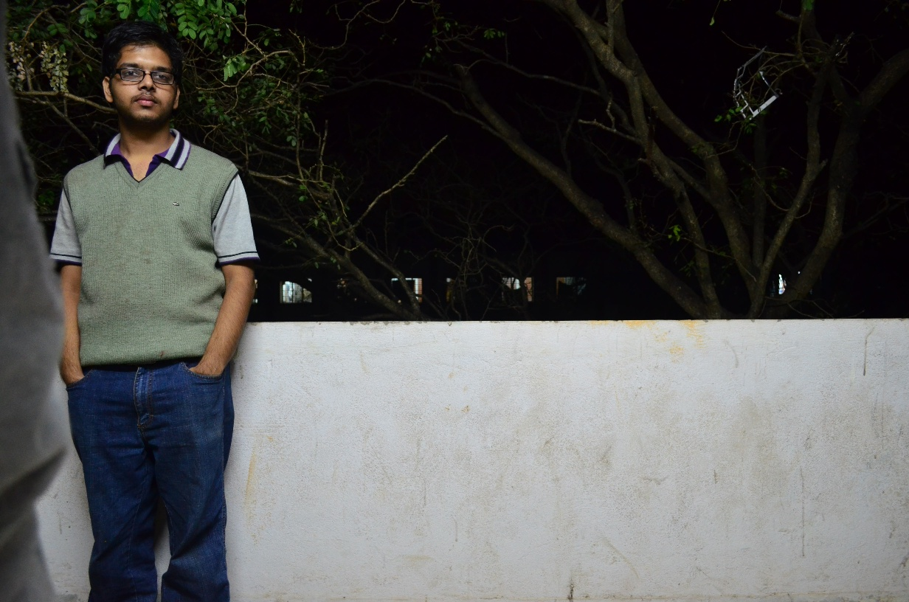

create your twin brothers
Create photos with 3 you :P. Here’s the code and the results. Take 3 photos of you with same background but when you are in a different possition. Here for every pixel in the three images it chooses the value of the RGB is with is farthest away from the other two. Well you cannot do it easily with 2 images because I don’t see any naive way to distinguish between you and background with only two images.
import cv2
import numpy as np
def far_away(a,b,c):
A = int(a)
B = int(b)
C = int(c)
if abs(A-B) < abs(B-C) and abs(A-B) < abs(A-C) :
return c
elif abs(C-B) < abs(A-C) and abs(C-B) < abs(A-B) :
return a
else :
return b
I = [None,None,None,None]
I[1]= cv2.imread("Image1.jpg")
I[2]= cv2.imread("Image2.jpg")
I[3]= cv2.imread("Image3.jpg")
rows = I[1].shape[0]
cols = I[1].shape[1]
res = np.zeros((rows,cols,3),np.uint8)
for i in range(I[1].shape[0]):
for j in range(I[1].shape[1]):
for k in range(I[1].shape[2]):
res[i][j][k] = far_away(I[1][i][j][k] , I[2][i][j][k] , I[3][i][j][k])
cv2.imshow("result",res)
cv2.imwrite("Merged.jpg",res)
cv2.waitKey()
First Image
Second Image
Third Image
Result